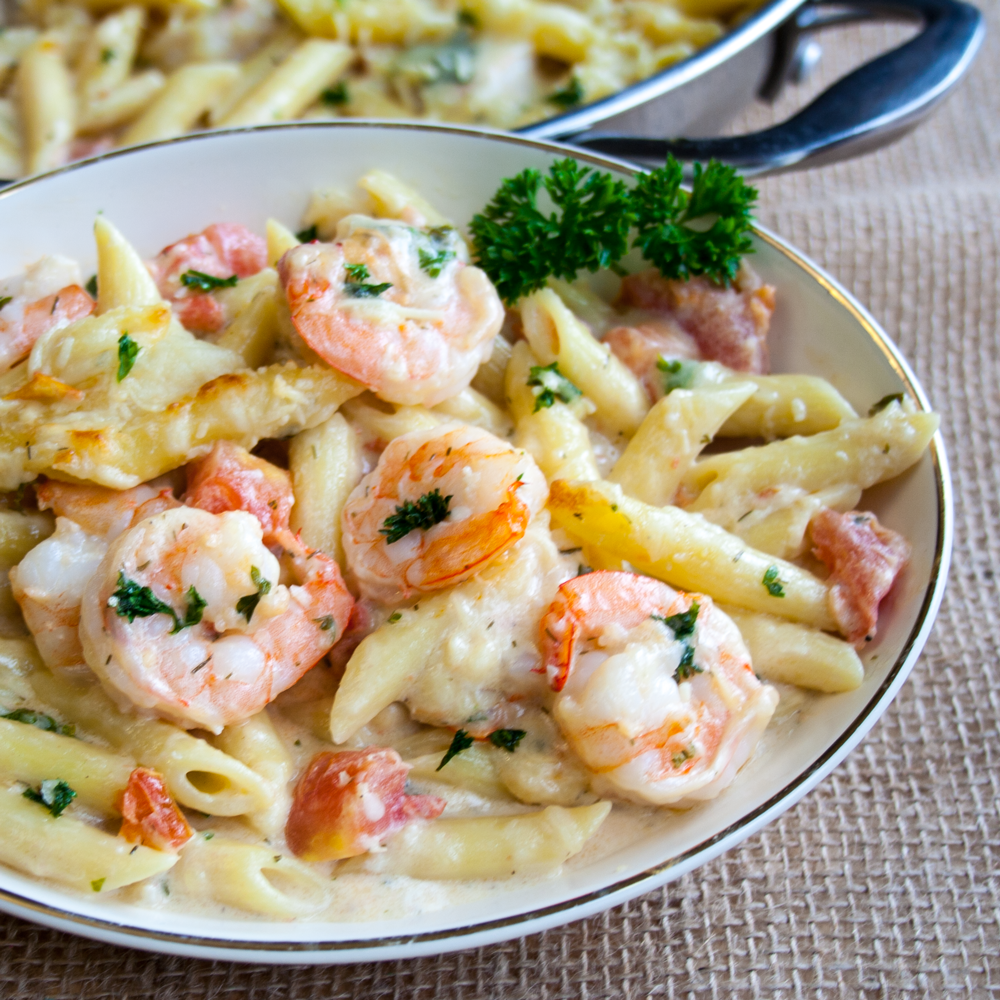

Garlic Shrimp Pasta

Description
Want a super satisfying, quick and easy dinner?
Then this buttery garlic shrimp pasta bake is definitely a family pleasing meal idea that you should try!
Ingredients
- 1 teaspoon vegetable oil
- 1 (10 ounce) package penne pasta
- 3 tablespoons butter, divided
- 1 tablespoon minced garlic
- 1 pound uncooked medium shrimp, peeled and deveined
- 3 tablespoons chopped fresh parsley, divided
- 2 teaspoons chopped fresh dill
- 2 tablespoons all-purpose flour
- ½ cup chicken broth
- 1 cup milk
- 2 large tomatoes, chopped
- 1 tablespoon lemon juice
- 1 teaspoon salt
- 1 teaspoon ground black pepper
- ¾ cup grated Parmesan cheese
- ½ cup grated Romano cheese
- ¼ cup shredded mozzarella cheese